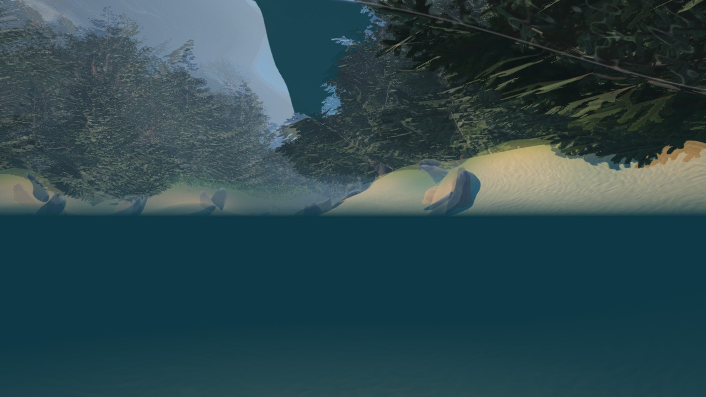

PRISMA: a camera at the water surface — waterline, film and drops
At the surface the frame splits along a waving waterline with a meniscus; after emerging, everything that was under water is covered by a refracting film that drains to the water level, leaving rivulets and drops.


lensWater tests the lens point of every pixel against NEREID's waving water plane: underwater optics below the line, the dry image above it, a bright refracting meniscus along it. Nothing runs down the part of the lens that is under water.
After emerging the film clings for the first third of sheetTime, then its ragged edge drains down, leaving meandering rivulets with a head drop and round lens drops with glints that dry over dryTime. Every parameter is tunable and the effect can be disabled.
- Verified
- Mac (Metal), AlpineValley review copy: a real-time dive recording (a frame every ~0.35 s, video assembled at real speed); prisma_lens_water test.
- Limitations
- The underside of the surface (total internal reflection) is not rendered separately yet; other backends are not visually verified.